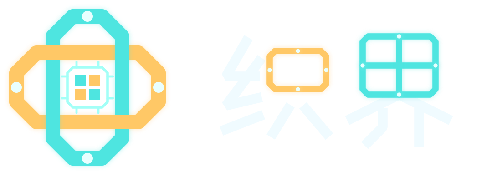

拖动转动 · 滚轮缩放 · 点击物件选中
本地草稿与云端版本分别保留；多个分支不会自动合并。
任何获得链接的人都能查看和复制快照。只发布你选中的已保存版本，不包含聊天、身份或编辑权限。后续草稿不会改变这份分享。
本地草稿保存在 IndexedDB；云端版本使用当前浏览器的安全 Cookie 确认归属。不采集浏览器指纹，不用 IP 识别你。
不同设备或浏览器不会自动同步。清理 Cookie、使用无痕窗口、身份过期或更换域名，都可能使原云端空间无法找回。本地存储也可能被浏览器清理。
JSON 导出是内容备份，不是身份恢复凭证。导入后会创建当前浏览器下的新副本。分享是公开快照，撤销不能收回他人已经下载的内容。
当前版本尚未提供云端内容删除或账号找回；Cookie 到期不会自动删除云端版本。请勿在名称、场景或对话中填写密码、密钥等敏感信息。
启用助手后，当前草稿和描述会发送给配置的模型服务商处理，服务商可能按其政策留存内容。停止只请求取消，不保证服务商停止处理或计费。具体服务商、保留期限和删除渠道须由站点在上线前明确公布。